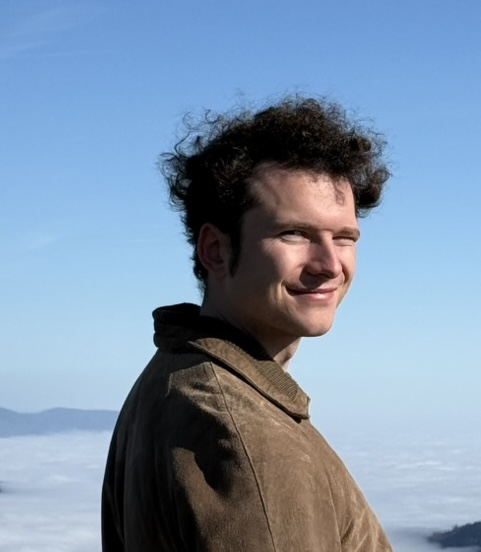

Quantum computing researcher | Computational physicist
Gian Gentinetta
I am a computational physicist working on hybrid quantum-classical methods for simulating quantum many-body systems. My research combines quantum computing algorithms with modern classical methods, including machine learning and variational Monte Carlo.

Bio
About me
Born and raised in Zurich, Switzerland, I obtained my B.Sc. and M.Sc. degrees in Physics from ETH Zurich. In my masters I focused on machine learning and quantum computing, culminating in a thesis on quantum machine learning performed at IBM Research Zurich. After an internship at IBM, I joined EPFL in 2022 to pursue a Ph.D. in computational quantum physics under the supervision of Prof. Giuseppe Carleo. My research focuses on hybrid quantum-classical algorithms for simulating quantum many-body systems. During my Ph.D., I had the opportunity to join Phasecraft in London for a summer internship, where I worked on quantum algorithms for quantum chemistry and materials science. When I'm not in the lab, I am usually found on Swiss trains, on top of a mountain, or swimming in a lake.
Research profile